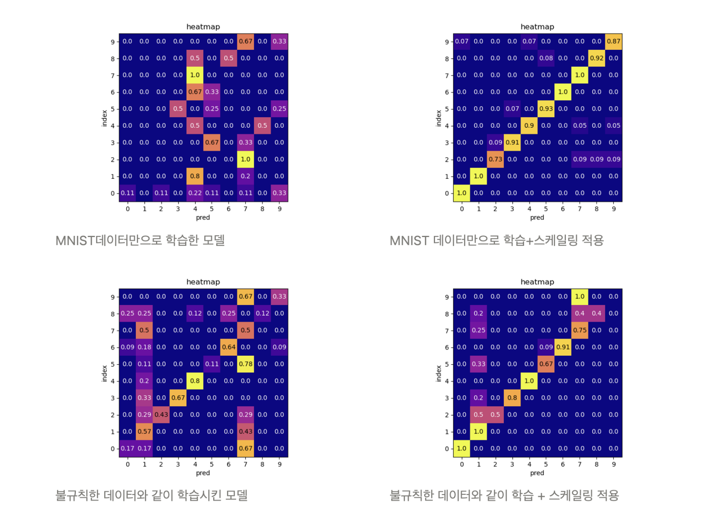

DigitFusion: 필기 숫자 분류기
1. 🔗 프로젝트 개요 & 링크
MNIST 기반 CNN 모델을 구현하고, PyQt5 데스크톱 앱으로 누구나 손글씨 숫자를 테스트할 수 있도록 UI를 제작했습니다.
2. ✨ 핵심 역량 & 문제 해결
- 데이터 증강과 정규화를 조합해 손글씨의 노이즈·기울기·크기 편차를 완화했습니다.
- 사용자가 직접 그린 숫자를 실시간으로 전처리·추론하는 PyQt5 UI 구현했습니다.
- 증강 중 발생하는 스택오버플로우 상황을 인지하고 해결해 잘 판별되지 않던 ‘1’ 데이터 판별 성능을 높였습니다.
3. ⚙️ 개발 과정
- MNIST dataset을 기반으로 CNN 숫자 데이터 판별 모델을 제작
- MNIST 기반 모델을 바탕으로 손글씨 추론하는 PyQt5 UI 구현
- 직접 손글씨 데이터를 수집하고, PyQt5 UI를 통해 데이터를 라벨링
- 자체 수집 숫자 데이터와 MNIST를 섞어가며 실험을 진행
4. 📊 결과 & 성과
- MNIST 데이터만 사용하고, PyQt5 UI 내부에서 즉각적인 증강을 하는 조합이 최고 성능인 92.6%를 달성했습니다.
- 직접 수집한 손글씨 데이터의 증강과 MNIST 데이터를 섞었을 때는 성능이 좋지 않았습니다.

5. 💡 배운 점 & 다음 단계
- 처음 프로젝트를 진행해 보았는데, 코드 예제만 따라치다가 스스로 문제를 정의하고 해결하는 과정이 처음에는 막막했습니다. 하지만 문제의 원인을 고민해보고 찾아서 해결하는 과정에서 새로운 즐거움을 느낄 수 있었습니다.
- 스택오버플로우 문제를 인지에 가장 큰 도움을 준 건 시각화였습니다. 시각화를 통해 증강한 1 데이터가 테두리만 남고 내부 채움이 날라가있음을 확인할 수 있었습니다.
DigitFusion: Handwritten Digit Classifier
1. 🔗 Overview & Links
Implemented an MNIST-based CNN classifier and wrapped it in a PyQt5 desktop app so anyone can sketch digits and receive instant predictions.
2. ✨ Core Strengths & Problem Solving
- Combined augmentation and normalization to handle noise, skew, and size variation in handwriting samples.
- Built a PyQt5 interface that preprocesses user drawings in real time and forwards them to the inference pipeline.
- Identified and fixed an augmentation overflow issue that had weakened recognition accuracy for the digit “1.”
3. ⚙️ Development Process
- Trained a CNN classifier on the MNIST dataset.
- Implemented a PyQt5 UI that performs immediate handwriting inference.
- Collected self-written digit samples via the UI and labeled them on the spot.
- Experimented with blending self-collected data and MNIST to evaluate performance trade-offs.
4. 📊 Results & Outcomes
- Achieved 92.6% accuracy when training solely on MNIST with on-the-fly augmentation inside the PyQt5 app.
- Mixing augmented handwritten samples with MNIST reduced accuracy, highlighting the need for better domain alignment.
5. 💡 Learnings & Next Steps
- Defining problems and debugging without examples felt daunting at first, but solving them became a rewarding loop.
- Visualization was key: it showed that augmented “1” digits lost their filled strokes, leading directly to the stack overflow fix.